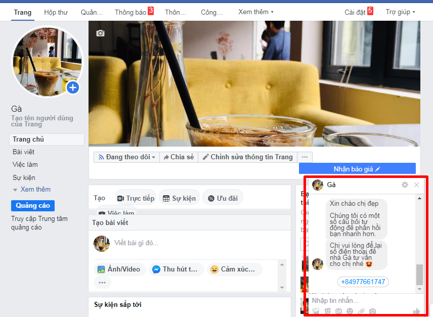
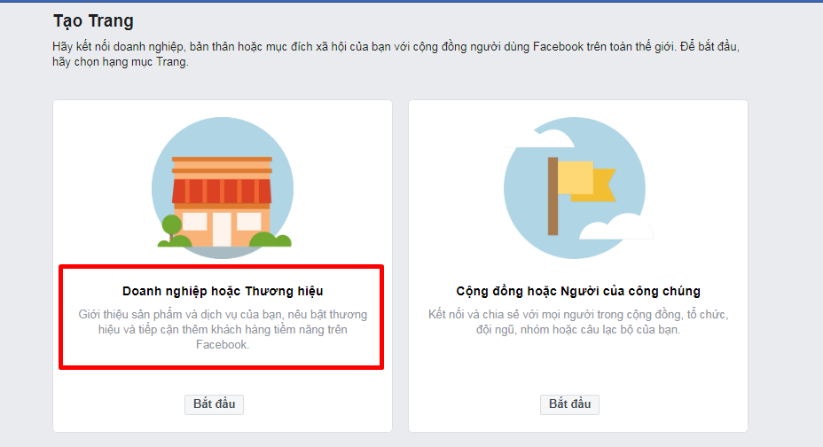
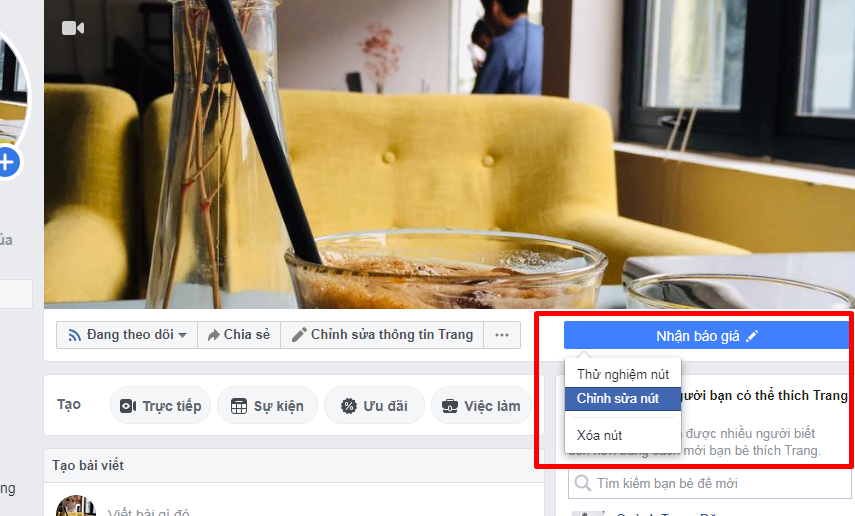
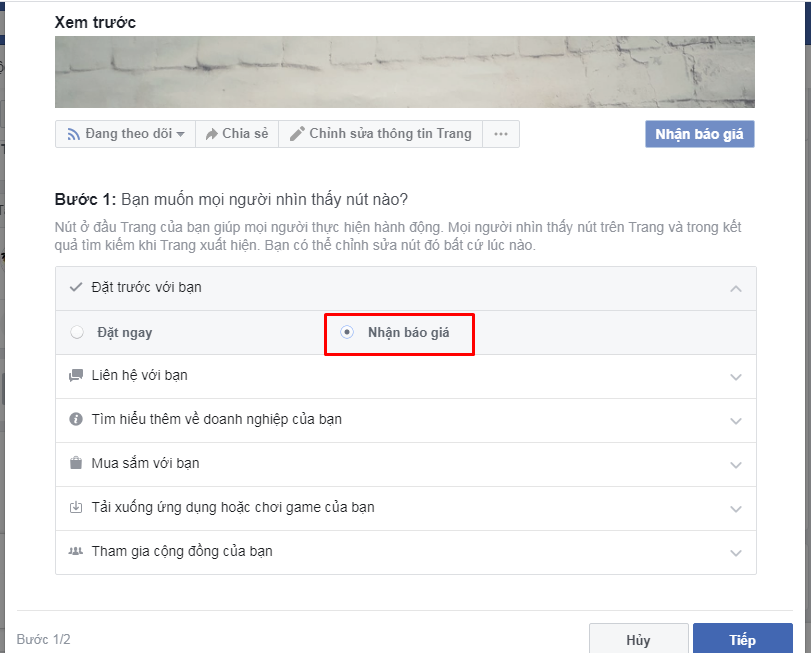
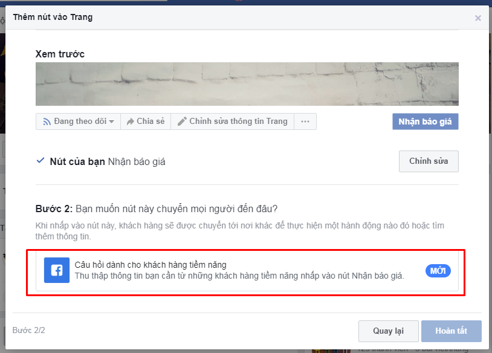
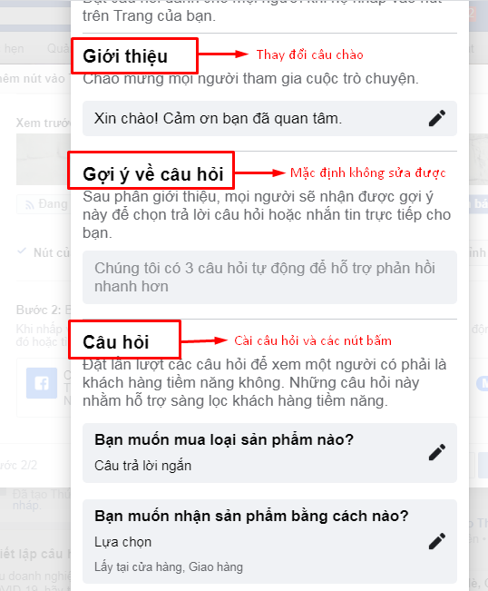
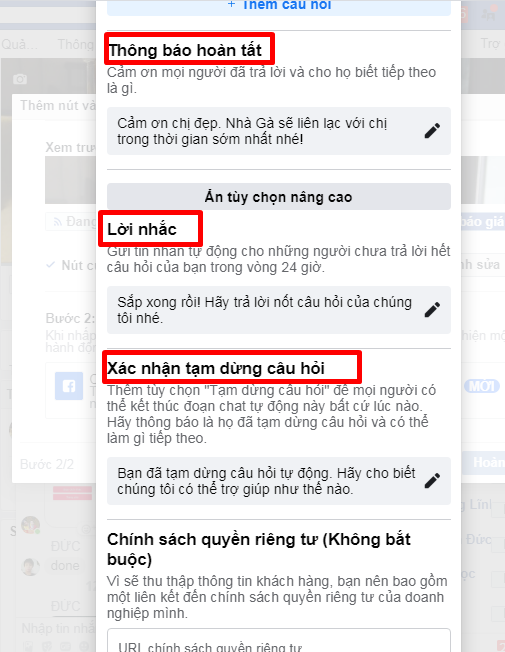
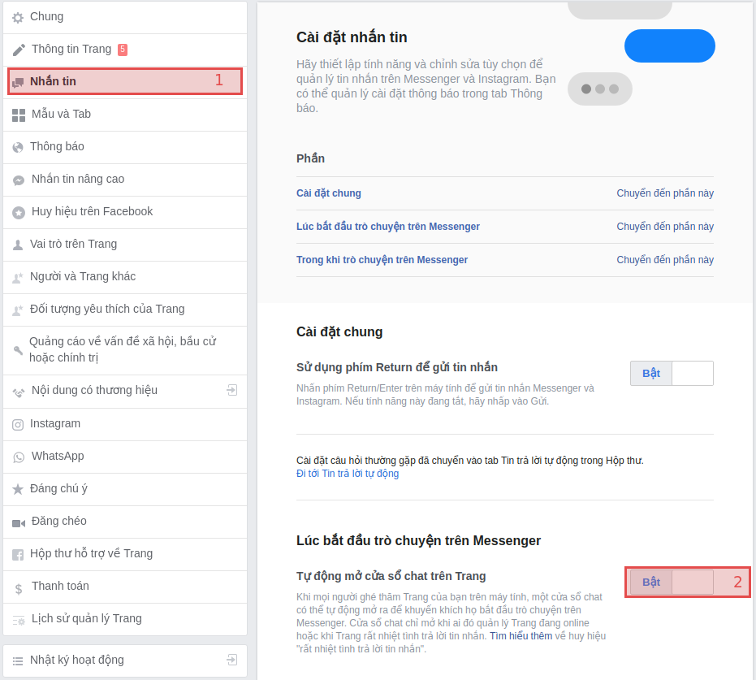
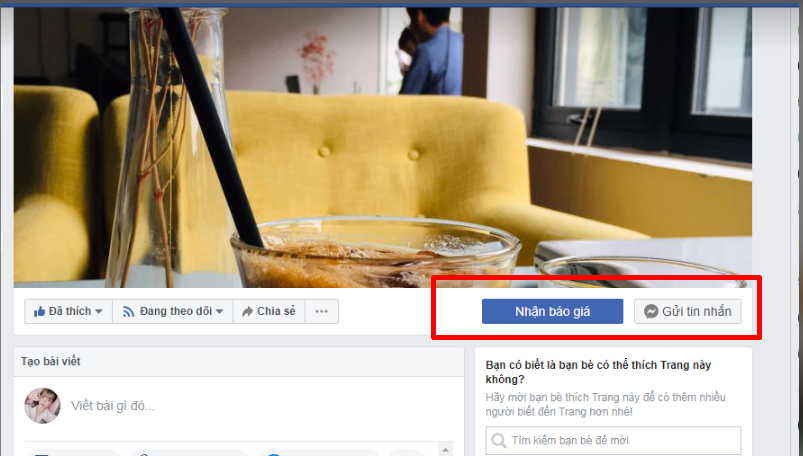
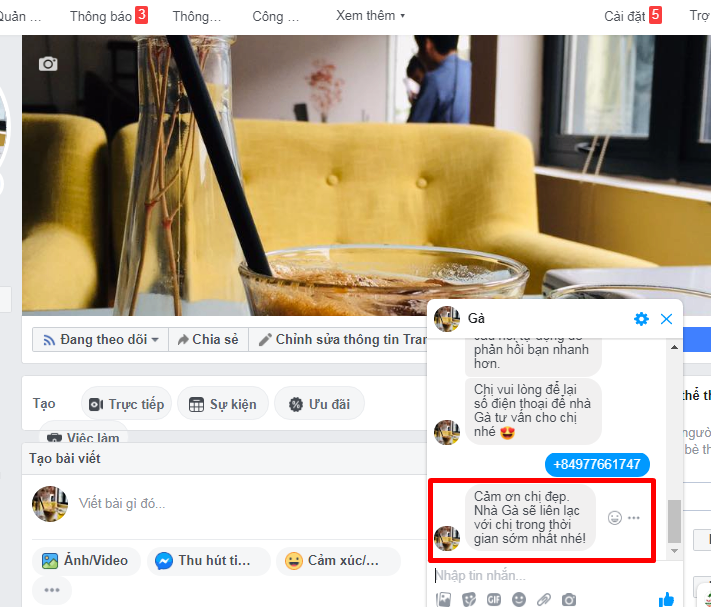

Tự động thu thập số điện thoại khi vào page

Ty Nguyen
CEO ❤️ AhaChat. Love babies & chatbot.
Nếu bạn thắc mắc vì sao khi vào một số page thì cửa sổ chat tự bật lên kèm theo số điện thoại của mình như bên dưới? Và bạn cũng muốn page mình được như thế? Vậy thì hãy theo dõi bài viết này của chúng tôi, cách làm vô cùng đơn giản, kể cả không dùng chatbot bạn vẫn có thể làm được, chỉ có 1 yêu cầu duy nhất là phải đọc hết bài viết này thôi, ahihi ^^.

Nào, bây giờ ta cùng nhau tiến hành cài đặt nhé!
Bước 1. Cài đặt nút Nhận báo giá
Nếu bạn chưa có page thì hãy tạo page Doanh nghiệp và thương hiệu.
Nếu bạn đã có page sẵn thì page bạn phải thuộc loại Doanh nghiệp hoặc Thương hiệu thì tính năng này mới hoạt động. Còn page Cộng đồng hoặc Người của công chúng thì không được đâu nhé :(

Rồi xong, bây giờ chọn Chỉnh sửa nút để đổi sang nút Nhận báo giá.

Chọn mục Đặt trước và tích chọn nút Nhận báo giá.

Bước 2. Cài đặt tin nhắn hiển thị
Đây là bước quan trọng nhất. Hãy chọn Câu hỏi dành cho khách hàng tiềm năng để tiến hành cài đặt câu hỏi nhanh.


Trong mục câu hỏi sẽ bao gồm:
Giới thiệu Lời chào bạn có thể tham khảo mẫu hoặc thay đổi nội dung chào hấp dẫn và riêng biệt của page muốn gửi đến khách hàng.
Gợi ý về câu hỏi Câu này sẽ là mặc định của Facebook bạn không chỉnh sửa được “Chúng tôi có một số câu hỏi tự động để phản hồi bạn nhanh hơn.” “Chúng tôi 3 câu hỏi tự động để phản hồi bạn nhanh hơn.”
Câu hỏi Đây là phần để các bạn thiết lập câu hỏi và các nút bấm. Thường thì các page hay áp dụng 1 câu hỏi vào thẳng vấn đề để hướng khách hàng theo chủ đề. Có các nút bấm lựa chọn hay xin Số điện thoại, Email,...Ở trong ví dụ này mình sẽ chọn Số điện thoại.
Ví dụ: Vì lượng tin nhắn quá tải, nhân viên bên em chưa kiểm tra kịp. Anh/Chị vui lòng để lại số điện thoại để bên em sẽ gọi điện tư vấn trực tiếp. Xin cảm ơn!Thông báo hoàn tất Khi khách hàng đã chọn câu trả lời thì đây là câu phản hồi tự động để khách hàng biết page đã nhận được thông tin từ họ.

Bước 3. Cài đặt tự động mở cửa sổ chat
Vào menu Cài đặt > Nhắn tin. Bật Tự động mở cửa sổ chat trên Trang

Lưu ý: Nếu bạn không nhìn thấy tùy chọn này nghĩa là page của bạn mới tạo, chưa tương tác nhiều nên bạn phải chờ thêm một thời gian nữa để page có tương tác thì mới xuất hiện tùy chọn này.
Bước 4. Test và xem kết quả
Sau khi tạo xong bộ câu hỏi thì giao diện trên page sẽ như thế này.

Và khi bạn nhấp vào Nhận báo giá hay Gửi tin nhắn thì sẽ ra kết quả như bên dưới.

Lưu ý: Đối với khách hàng chưa chat với page lần nào mà bấm Gửi tin nhắn thì mới thấy nội dung hiển thị như trên.
Vậy là xong, bạn có thể nhờ bạn bè hoặc dùng nick phụ nào đó chưa từng chat với page để vào page xem ô chat kèm số điện thoại có tự động bật lên không.
Đặc biệt, khi kết hợp cài đặt này vào chatbot trả lời tự động của AhaChat thì bạn sẽ còn tăng được khả năng bán hàng và thu thập được nhiều thông tin khách hàng hơn nữa. Nếu bạn có chỗ nào chưa hiểu thì đừng ngần ngại liên hệ với chúng tôi để có câu trả lời nhanh nhất và hiệu quả nhất nhé!